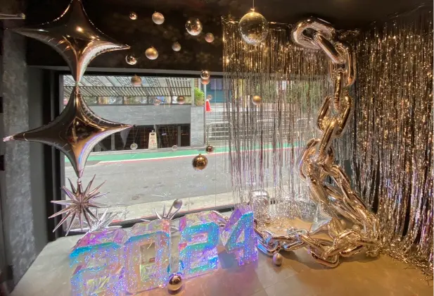
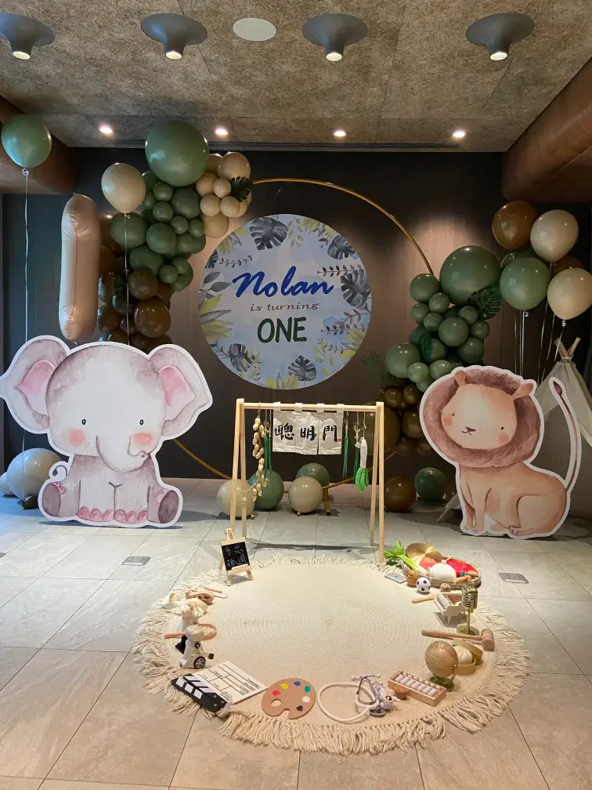
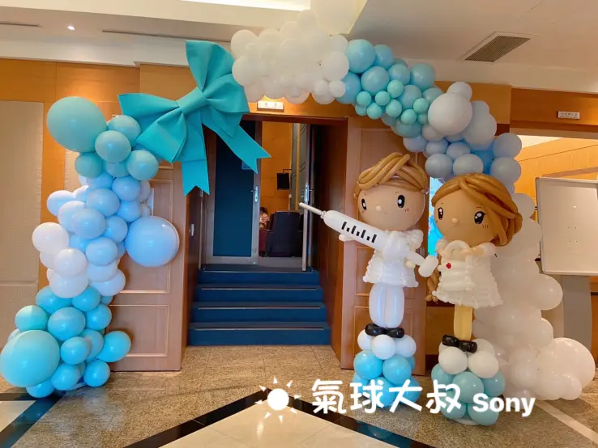
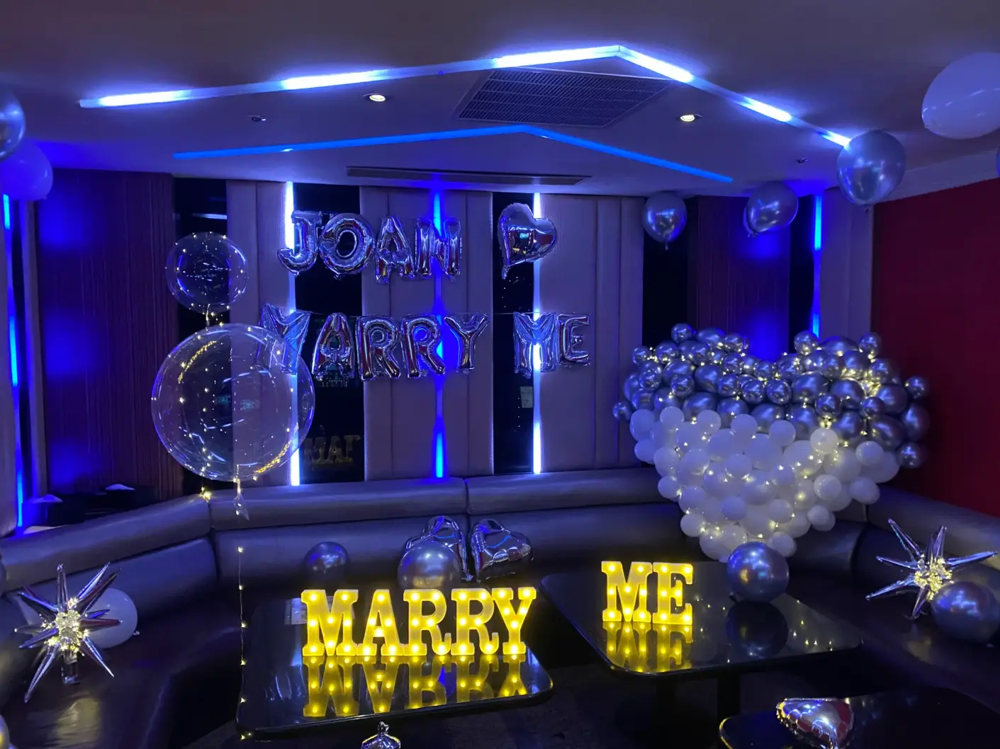
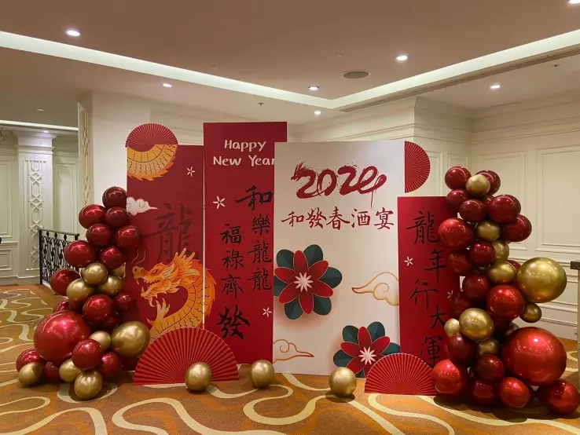

氣球會場佈置
氣球拱門 ✕ 主題拍照牆 ✕ 婚禮爆破 ✕ 商業活動
正在尋找專業的氣球會場佈置專家嗎？氣球大叔 Sony 提供最吸睛的氣球拱門、主題背板、打卡牆與商業活動裝飾。我們擅長根據不同場地與主題，客製化打造專屬佈置，服務範圍涵蓋台灣中部以北，歡迎洽詢！
- 🎀 專業佈置： 氣球拱門、主題背板、氣球牆、舞台主視覺、品牌LOGO牆。
- 💥 爆破特效： 婚禮氣球爆破、開幕天爆球、趣味地爆球，創造活動高潮。
- 🏢 多元應用： 完美融入生日派對、抓週、企業活動、百貨商場展銷。
- 📍 服務地區： 北中部為主（基隆/雙北/桃園/新竹/苗栗/台中），其餘縣市可洽詢。
實際案例照片






常見問題 FAQ
Q1：你們提供哪些氣球佈置服務？
A1：我們提供氣球拱門、拍照牆、舞台背景、入口裝飾、品牌牆、主視覺區等佈置服務，可依活動主題調整色系與造型。
Q2：你們有做婚禮爆破或開幕爆破嗎？
A2：有的！我們提供專業婚禮氣球爆破與開幕爆破，可配合倒數與音樂，效果驚艷，適合舞台開場或剪綵儀式。
Q3：什麼是天爆球與地爆球？有什麼不同？
A3：天爆球是氦氣飄浮爆破球，地爆球則為地面手動引爆；皆可撒出氣球、金粉、花瓣等，提升氣氛與話題性。
Q4：可以結合爆破與主題佈置嗎？
A4：當然可以！我們可依活動主題設計氣球牆與爆破元素，包含色系搭配、撒出內容與整體造型規劃。
Q5：戶外佈置會不會被風吹倒？
A5：我們會加裝水袋、壓條與鋼索加強固定，確保即使在戶外市集、校園、婚禮現場也穩固安全。
Q6：會場佈置費用如何計算？如何取得報價？
A6：採客製化報價。費用依佈置規模、複雜度及地點而定。歡迎提供場地照片與預算，我們將提供詳細報價單。
👉 查看完整 FAQ